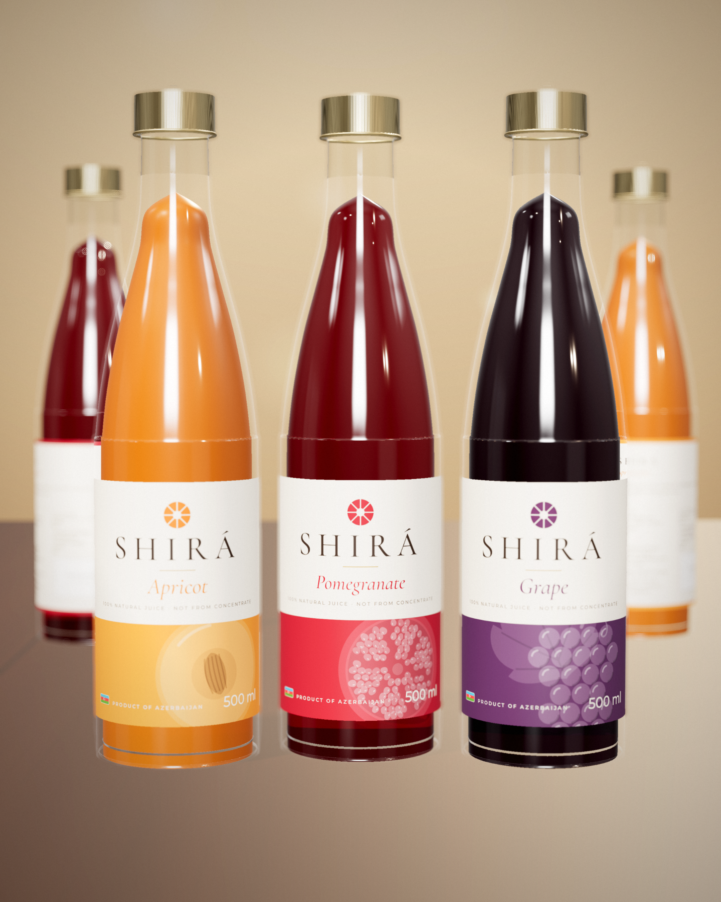
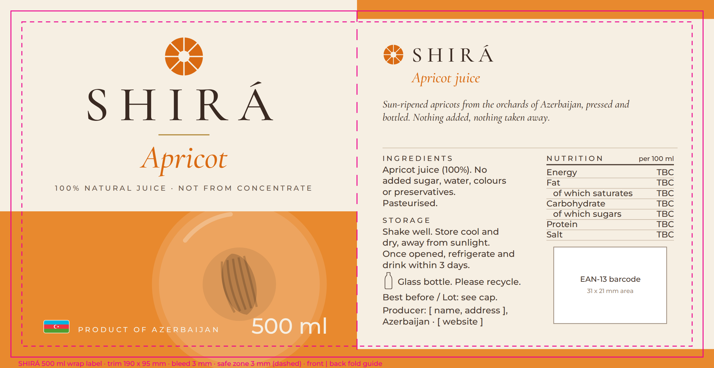
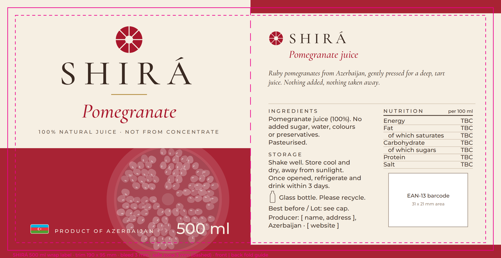
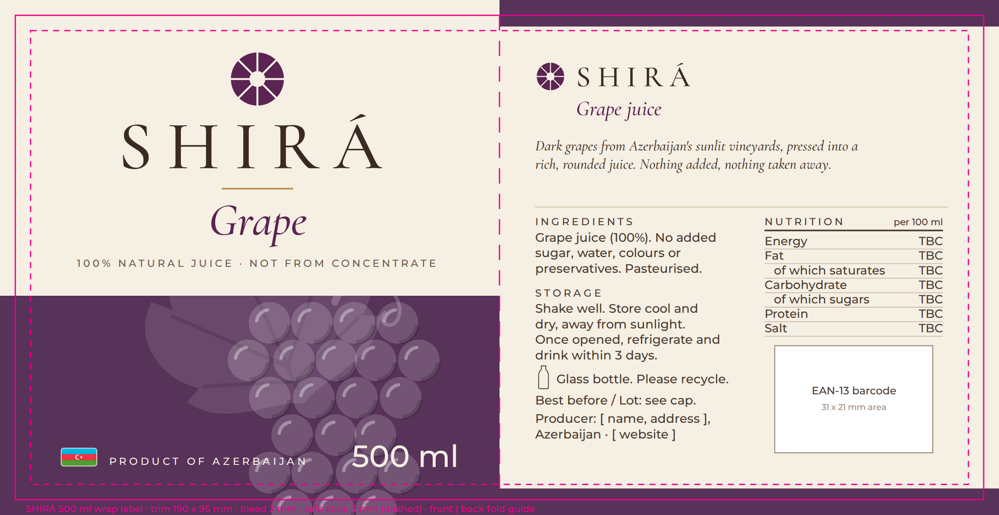

100% natural fruit juice from Azerbaijan, in a 500 ml clear glass longneck with a wrap-around label. Three launch flavours: Apricot, Pomegranate, Grape.
For label designer, printer, bottle & cap suppliersStatus draft for reviewTBC = to be confirmed by the brand owner

3D visual of the intended finished pack. Not a photograph; final glass, cap and print will differ slightly.
01Packaging strategy
SHIRÁ should look like a small Azerbaijani juice house, not a supermarket juice. On the shelf, a calm cream label, one confident colour per fruit and a gold cap make it the bottle you would put on a dinner table. On opening, the twist of the gold cap and the true colour of the juice through clear glass confirm it is real fruit. The single impression: pure fruit from Azerbaijan, handled with care.
02Structure
Primary pack
Bottle: 500 ml clear (flint) glass longneck, straight cylindrical body, long gentle shoulder, narrow neck. Approx. Ø 66 mm × 265 mm. TBC exact supplier drawing.
Closure: metal twist-off cap with tamper-evident band, finished in champagne-gold lacquer, fine vertical knurl. Optional: SHIRÁ emblem embossed or printed on the top. TBC neck finish (e.g. 28 mm ROPP or twist-off lug) to match the bottle.
Fill: juice fills well into the neck so the colour reads from top to bottom.
Label: one wrap-around paper label, 190 × 95 mm, applied with its base about 17 mm above the bottle base. It leaves a ~17 mm gap at the back.
Secondary pack
Shipping carton for 12 bottles (3 × 4) in kraft corrugated board with cardboard dividers, one-colour print: SHIRÁ wordmark, flavour, quantity. TBC 6 or 12 per case.
Optional gift box for 3 bottles (one of each flavour). TBC whether this is in the launch.
03Visual identity on the pack
Logo
Front panel, centred, upper third: emblem (Ø 10.4 mm) above the SHIRÁ wordmark.
Wordmark minimum width on any pack: 25 mm.
Wordmark in Ink on Cream. On a dark background use Cream; never put it on the coloured band.
The emblem always takes the flavour colour on labels and gold on the cap.
Typography
Wordmark & flavour name: Cormorant Garamond Medium and Medium Italic.
All information text: Montserrat Regular / Medium.
Back-panel body text 2.4 mm type size; lowercase letters must stay at least 1.2 mm tall (see section 09).
Both fonts are free (SIL Open Font License).
Colour
Role
Hex (screen)
Where
Print match
Cream
#F6EFE3
Label ground
TBC by printer
Ink
#3A2A22
Wordmark, body text
TBC
Gold
#B8934A
Rule under wordmark; cap
Gold foil recommended
Apricot band
#E8892E / accent #D96A12
Band, emblem, flavour name
TBC
Pomegranate band
#A82334 / accent #A8172C
Band, emblem, flavour name
TBC
Grape band
#573259 / accent #5B2453
Band, emblem, flavour name
TBC
Graphics
Each band carries a large tone-on-tone cross-section of its fruit, cropped by the label edges: halved apricot with stone, cut pomegranate with seeds, grape bunch with vine leaf. It is the same flat, geometric style as the emblem.
No photography and no green "natural" leaves. The fruit illustration is the only image.
Origin mark: a small flat Azerbaijan flag (7 × 3.5 mm, official blue #00B5E2, red #EF3340, green #509E2F, white crescent and star, rounded corners, thin cream outline) placed before PRODUCT OF AZERBAIJAN on the front band. No Azerbaijani words on the pack.
04Information on each panel
Front panel (95 mm)
SHIRÁ emblem and wordmark
Flavour name (e.g. Pomegranate)
100% NATURAL JUICE · NOT FROM CONCENTRATE
Fruit illustration on the colour band
Minimal Azerbaijan flag + PRODUCT OF AZERBAIJAN, and 500 ml
Back panel (95 mm)
SHIRÁ wordmark and "[Flavour] juice"
Two-line brand story in English
Ingredients, storage, recycling
Nutrition per 100 ml TBC lab values
EAN-13 barcode area (31 × 21 mm)
Best before / lot reference, producer name and address TBC
Best-before date and lot number are printed on the cap (inkjet), so one label print run works for every batch.
05Label artwork
Print-ready drafts at full size: 190 × 95 mm trim, 3 mm bleed, 3 mm safe zone, front and back separated by a fold guide. The magenta lines show the trim (solid) and safe zone (dashed) and are not printed. The files are SVG with the fonts embedded: shira-bottles/label/shira-<flavour>-label.svg.

Apricot

Pomegranate

Grape
06Materials and finishes
Glass: clear flint, 100% recyclable
Label stock: textured uncoated wet-strength paper (wine-label type), cream or white, which survives fridge condensation and ice buckets
Hot gold foil on the rule under SHIRÁ and on the emblem on the front
Light blind emboss on the SHIRÁ wordmark (optional, tactile premium cue)
No gloss lamination. It would cheapen the paper feel.
No shrink sleeve or plastic label
Application: pressure-sensitive (self-adhesive) label on a reel. TBC reel core size and unwind direction with the bottling line.
07Unboxing and gifting
The main sale is the shelf, so the bottle has to do the work alone. For the optional gift box and for online orders:
Outer box: plain kraft with a cream SHIRÁ sticker seal. It signals care without excess packaging.
Opening: three bottles standing in a die-cut cardboard insert, one of each colour, labels facing up.
Extras: one small card with the story of the three fruits and a QR code to the website TBC.
After: the clear bottles are worth keeping and refilling.
08Standing out
Local glass-bottle juices on the shelf share one look: white labels, big green leaf logos, photo-style fruit, many small claims and certification badges, and plain silver caps. That reads as healthy but generic.
Avoid: green leaves, bright white, fruit photography, many badges, crowded front panels.
Do instead: warm cream paper, one bold colour band, a single large fruit cross-section, generous empty space, and a gold cap. From across the aisle the three colours (orange, red, purple) should read as a set.
New flavours (e.g. Quince, Cherry, Sea-buckthorn) only need a new colour and a new illustration in the same style.
10Technical requirements
Barcode: EAN-13 from GS1 Azerbaijan, black bars on white, at least 80% magnification (≈ 31 × 21 mm incl. quiet zones), bars vertical when the bottle stands. TBC numbers.
Text size: lowercase letters at least 1.2 mm tall (EU Regulation 1169/2011 rule for packs over 80 cm²; a good standard for export). The "500 ml" figures at least 4 mm tall. The current artwork meets both.
Files: deliver as PDF/X-4 with fonts outlined or embedded, CMYK + foil as a separate spot layer, dieline on its own non-printing layer.
Colour: printer to match the hex values to CMYK or Pantone and supply a printed proof on the chosen paper before the run.
Dieline: confirm 190 × 95 mm and corner radius with the label printer against the real bottle.
Before printing, confirm with a food-labelling specialist: the required languages and wording for Azerbaijan and any export markets (the pack currently uses English only; Azerbaijan may require mandatory information in Azerbaijani, which could go on a small back sticker for the local market), the claims "100% natural", "not from concentrate" and "no added sugar", lab-tested nutrition values, the producer's legal name and address, and whether the ℮ estimated-quantity mark is needed.